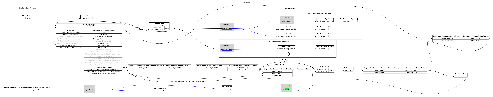
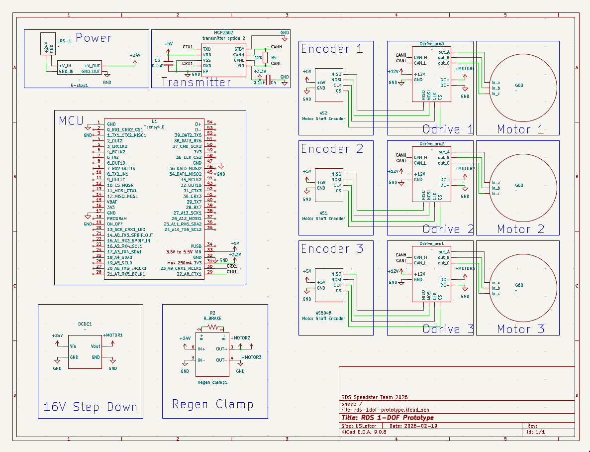

1 Interactive 3D Model
Drag to rotate · scroll to zoom · right-drag to pan
Interactive model — Full finger assembly
2 Full Finger CAD
General assembly overview — toggle between standard and exploded views


Figure 1 — Standard assembly view of the Speedster finger
3 Subassembly CAD
Use the arrows or keyboard ← → to browse subassemblies

4 Drake Simulation Diagram
System block diagram — scroll horizontally to explore, or click to expand

Figure 5 — Drake simulation system diagram
5 Electrical Schematic
Full wiring diagram for the Speedster finger system

Figure 6 — Electrical wiring schematic for the Speedster finger system
6 ROS 2 Node Graph
Full ROS 2 computation graph — nodes, topics, and action interfaces for the finger system

Figure 7 — ROS 2 node graph: /simulation_bridge feeds motor feedback to /finger_planner, which exposes the motion action servers consumed by /finger_whackamole